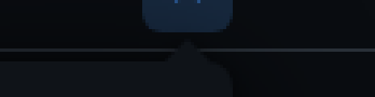
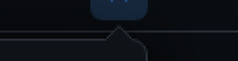
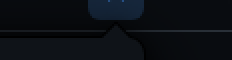
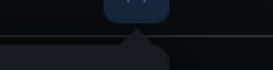
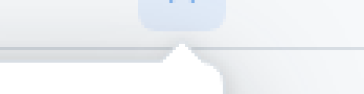
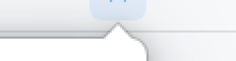
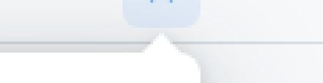

The popover's 14 × 7 arrow points up at ⟷ from the card's top edge. It spans window rows 34 to 40: rows 34–36 sit on the title bar's chrome, row 37 is the bar's 1 px YamvLine, and rows 38–40 sit over the tree, whose sidebarBackground is the chrome colour again. The arrow is filled with pageBackground, which is within a few luminance points of the chrome in both Studio halves, so in lane A, the approved look, the owner sees no arrow.
Each lane is the popover at 1:1 in a crop of the window's right end, positioned as MainWindow.axaml places it (button bottom at 32, popup 2 px below), then a 4× close-up of the same render with each pixel shown as a 4 × 4 block. Contrast is measured from that 1× render: fill is a pixel inside the arrow on row 36 (on the bar, x 311) against the bar 7 px left of the arrow's edge (x 302), the popover's shadow included; edge is the lightest against the darkest pixel from x 302 to 311 on that row, the widest step the eye meets crossing the arrow's left edge (rim and ring included). For scale, by token value: pageBackground on chromeBackground is 1.05:1 in dark and 1.07:1 in light, the bar's own line on the chrome is 1.48:1 and 1.27:1, and WCAG asks 3:1 of a graphic that carries meaning. Orange marks are annotations, not UI.






